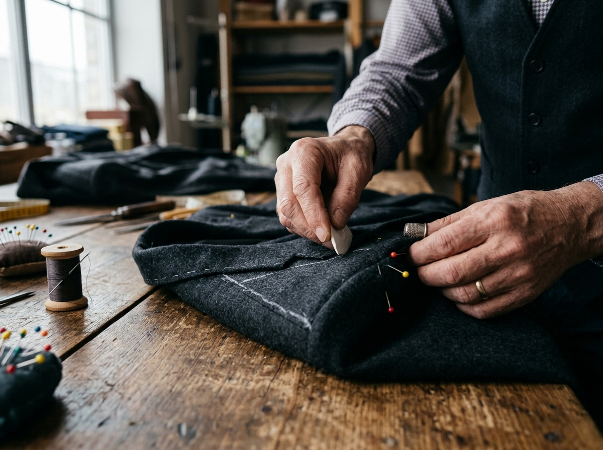
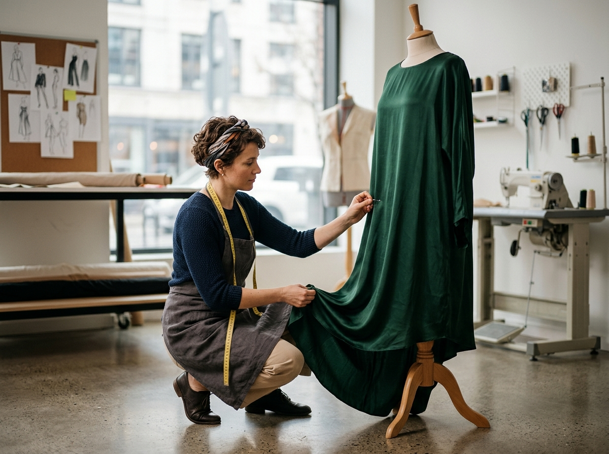
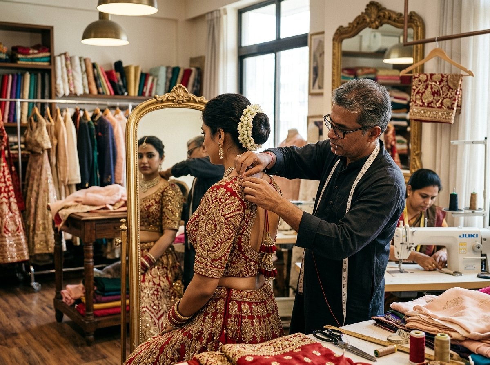
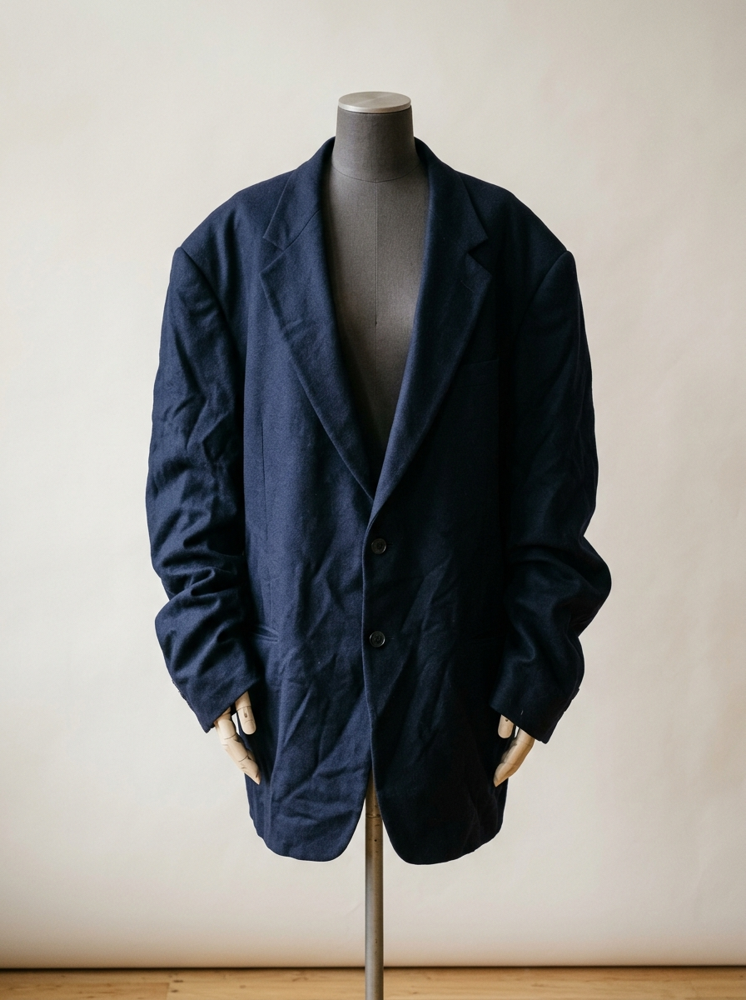
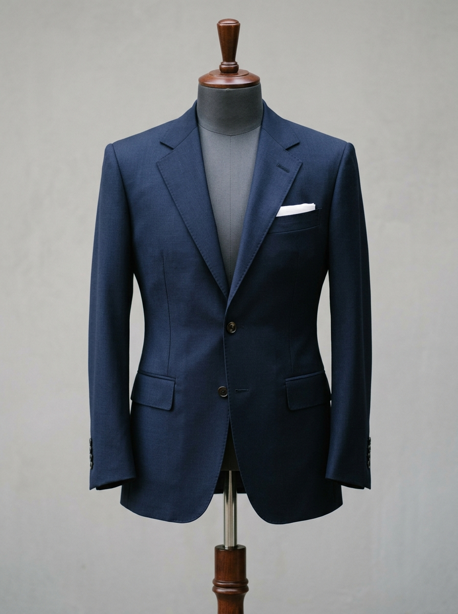
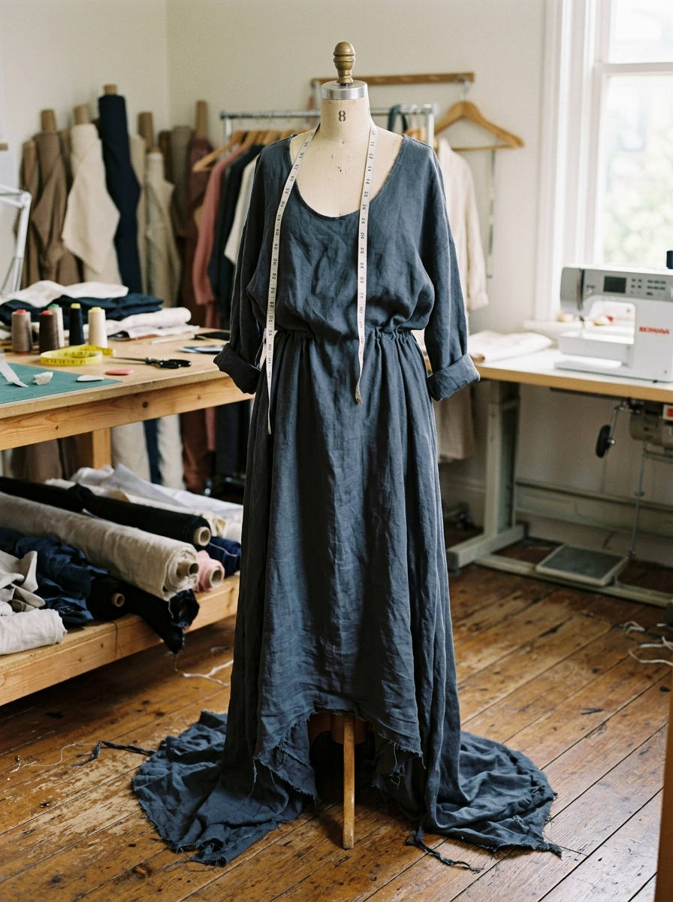
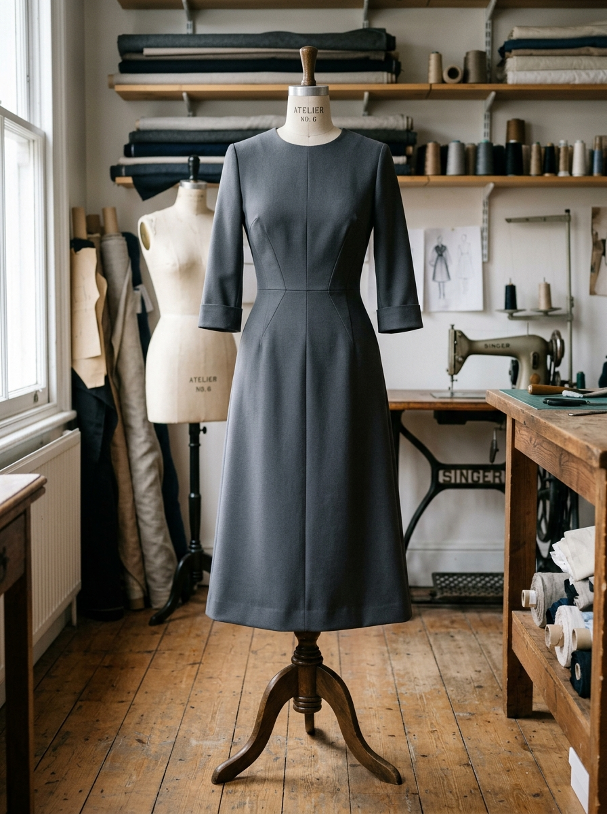
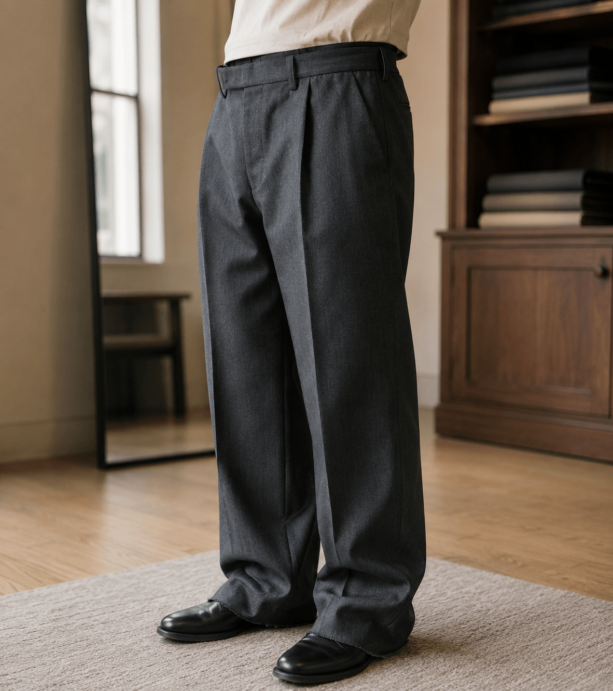
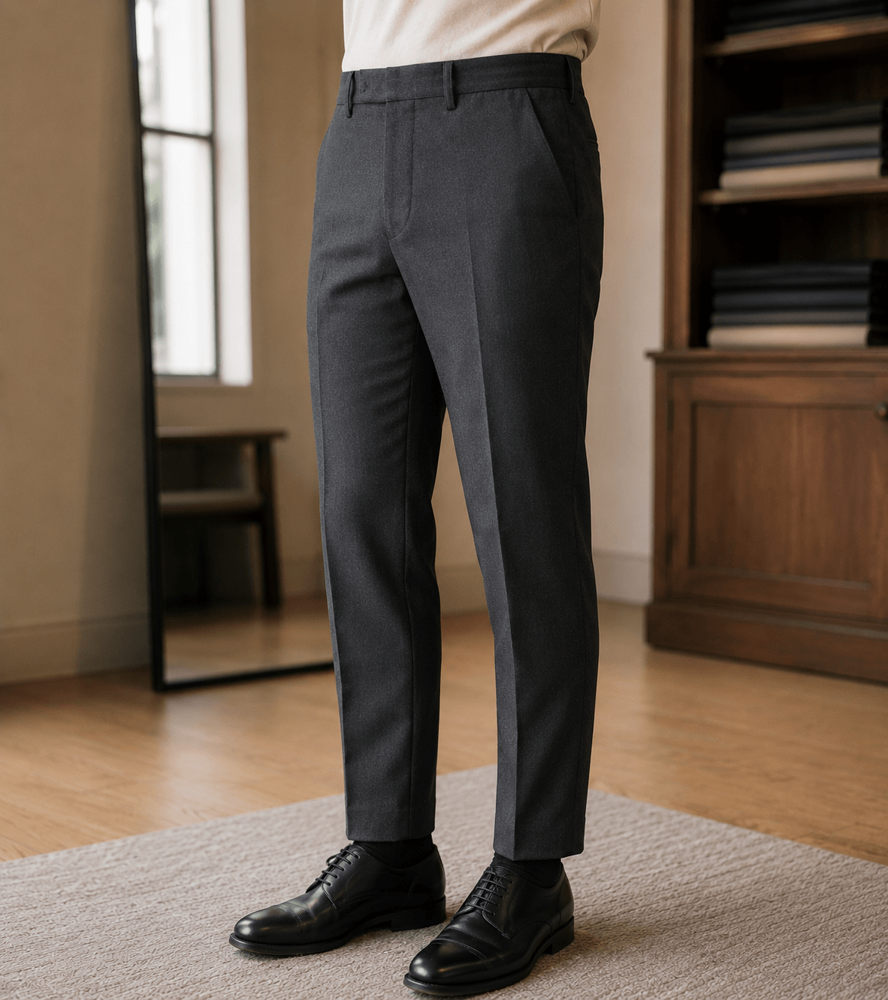

Every Garment
Deserves a Perfect Fit
Whether your favourite trousers have become too loose, a dress needs hemming for a wedding, or a suit jacket needs reshaping — our alteration service handles it all with professional precision.
We work on all types of garments: everyday clothing, formalwear, occasion wear, and bridal pieces. No job is too small, and no alteration too complex.

Trouser
Alterations
From simple hemming to full waist resizing — we handle all trouser and bottom alterations with precision.
Hemming
Shorten trouser length by single or double hem. We match the original stitch type and thread colour for a seamless finish.
- Single & double hem
- Original stitch matching
- Cuff preservation option
Waist Resizing
Take in or let out the waistband for a comfortable fit. We work from the back seam to preserve the front appearance and balanced hip line.
- Take in up to 2 inches
- Let out (if seam allowance permits)
- Waistband restructuring
Leg Width & Taper
Slim or widen the leg silhouette — from full thigh to ankle — to modernise older trousers or adjust fit for your body type with a cleaner finish.
- Full taper (hip to ankle)
- Partial taper (knee to ankle)
- Leg width adjustment
Dress & Skirt
Alterations
Whether a dress is too long, too loose at the waist, or needs a zip replaced — we handle all dress alterations with the same care we give to new garments.
From maxi to midi or knee-length, we reshape and level the hem so it falls evenly around the full circumference.
Replace broken or outdated zips with modern concealed or contrast zips. We match original construction.
Take in side seams, add darts, or adjust the bodice for a more fitted or relaxed silhouette with balanced shaping.

Shirt & Jacket
Adjustments
Men's formal alterations handled with the precision your wardrobe deserves.
Shirt Slimming
Take in the side seams of a shirt for a slimmer, more tailored silhouette. We preserve original stitching style from shoulder to hem.
Sleeve Shortening
Shorten shirt or jacket sleeves to the correct length. For jackets we can work with or without button cuffs, with proportions preserved.
Jacket Reshaping
Full jacket alteration — shoulder, chest, waist, and hem — to bring an inherited or off-rack jacket into bespoke territory with a balanced fit.
Collar & Cuff Work
Replace worn collars and cuffs to restore a garment to fresh condition, or update the style to something more contemporary.

Bridal alteration timelines are confirmed at consultation. Please book at least 4–6 weeks before your event to allow adequate time for fittings.
Bridal & Occasion
Alterations
Bridal and occasion alterations require the highest level of skill and sensitivity. These garments hold enormous personal significance — and we treat them accordingly. We work with all bridal fabrics including silk, brocade, organza and heavily embellished pieces.
Before & After
Transformations
A skilled alteration can completely transform how a garment fits and looks. Here are a few examples of what we achieve.

Loose at the shoulders and chest, sleeves too long, with an unshaped jacket fit.

Shoulders reset, chest taken in, and sleeves shortened for a clean, balanced tailored fit.

Floor-length dress dragging, loose at the waist, with an unshaped inherited fit.

Hem raised to midi length and waist taken in for a clean, structured silhouette.

Wide-leg trousers with excess length, a loose waist, and too much fabric through the leg.

Legs fully tapered, waist reshaped, and hems set at the ankle for a modern slim fit.
Bring Us Your
Garment
Walk in with any garment that needs attention. We'll assess it, tell you what's possible, give you an accurate timeline, and get it right.